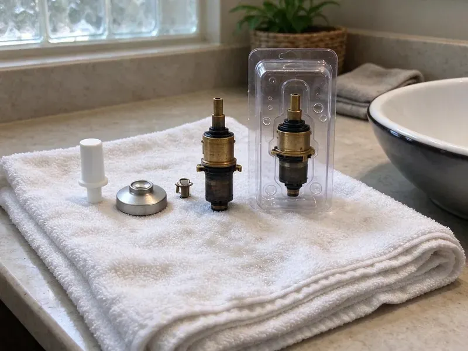
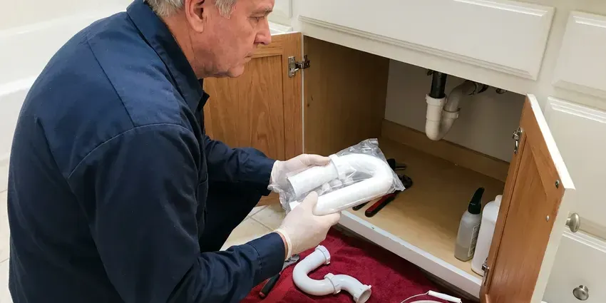

Toilet Repair in Vienna, WV
A running, rocking or weak-flushing toilet burns through water and money. GJK Plumbing repairs toilets across Vienna, WV with stocked trucks and upfront pricing.
- Same-Day Toilet Repairs
- Fast Local Service
- Clear Pricing
- Licensed, Insured Plumbers
Stop the Running, Leaking and Phantom Flushing in Vienna, WV.
We handle everything from minor repairs to major overhauls, ensuring your toilet functions properly.
Your Local Source for Toilet Repair in Vienna, WV
GJK Plumbing specializes in comprehensive toilet repair, addressing common and complex issues for homes across Vienna, WV. From phantom flushes to persistent clogs, our licensed plumbers accurately diagnose the problem and implement lasting solutions using quality parts.
Our expertise includes:
- Descaling rim jets and siphon holes blocked by hard water
- Repair or replace faulty toilet components.
- Clearing stubborn toilet clogs

Additional Bathroom Plumbing Services in Vienna, WV
From toilets to showers, our bathroom plumbing team in Vienna, WV handles repairs, installs, and upgrades with tidy, code-compliant work.


Customers
Why Choose GJK Plumbing for Toilet Repair in Vienna, WV?
Choosing GJK Plumbing for your toilet repair means getting expertise and peace of mind. Our skilled technicians are adept at handling all toilet makes and models, ensuring a precise and durable repair.
- Quality Parts, We use only reliable, high-quality toilet components for lasting repairs.
- Accurate Diagnosis, Our plumbers use specialized tools to pinpoint the exact cause of your toilet's malfunction, from worn-out flappers to blocked trapways.
- Leak Testing, We dye-test the tank and check the base so hidden leaks do not get missed.
Citywide Coverage
GJK Plumbing proudly serves every neighborhood in Vienna for your toilet repair needs. Whether you're in the heart of downtown or the surrounding suburbs, our plumbers are local and ready to respond.
Experienced Team
Our plumbing team has extensive experience with the common toilet issues homeowners face, including problems related to hard water and older plumbing systems. We are continuously trained on the latest repair techniques and toilet technologies.
Safety-First Approach
Safety and compliance are paramount in every toilet repair we undertake. GJK Plumbing ensures that all components are correctly installed and that your plumbing system remains up to code after our service in Vienna, WV.
Trusted Certified Vienna Plumbing Services Professionals
At GJK Plumbing, we take pride in providing certified plumbing services throughout Vienna, WV. Backed by leading industry credentials, our experienced plumbers combine technical skill with genuine customer care. Whether it is repair, installation, or maintenance, we follow strict safety and quality standards to deliver long-lasting results you can trust.
Call Us Now PHCC Plumbing Contractor Recognition
PHCC Plumbing Contractor Recognition Better Business Bureau (BBB) Accreditation
Better Business Bureau (BBB) Accreditation Angi Certified Pro
Angi Certified Pro ISO 9001 Quality Management Certification
ISO 9001 Quality Management CertificationTrusted Toilet Repair Services in Vienna, WV
Commercial Toilet Repair in Vienna
Commercial toilets often see heavier use and require specialized parts and expertise for repair. GJK Plumbing offers complete toilet repair services for businesses and commercial properties throughout Vienna. We understand the importance of minimizing downtime for your restrooms and provide fast, durable repairs for flushometer toilets, low-flow models, and standard commercial units, ensuring your business operations run smoothly.

Emergency Toilet Repair in Vienna, WV
A severely clogged or overflowing toilet can be an emergency, especially in a one-bathroom home or a busy commercial setting. When you have a toilet crisis in Vienna, WV, GJK Plumbing offers rapid response emergency services to prevent water damage and restore functionality. We're equipped to handle urgent issues like severe clogs, burst supply lines, or toilets that won't stop running, bringing immediate relief and lasting repairs.
Leaking Toilet Base Repair in Vienna, WV
Water around the base typically means the wax ring has failed or the toilet has been rocking on a loose flange. On slab foundations, the flange often sits on concrete and can crack when bolts are overtightened. We pull the toilet, inspect the flange, install a repair ring or new flange if needed and reset the bowl on a fresh seal. We also check for soft flooring so you know if any water damage needs attention.
Toilet Brands We Service in Vienna
GJK Plumbing provides repair services for all major toilet brands commonly found in Vienna homes. This includes popular manufacturers such as American Standard, Kohler, Toto, Delta, and Gerber. Our technicians carry a wide range of universal and brand-specific replacement parts, ensuring that we can fix almost any toilet model, regardless of its age or brand, quickly and efficiently. You can trust us with your specific toilet unit.
Toilet Gasket and Seal Replacement in Vienna, WV
The gaskets and seals within your toilet tank and at its base are essential for preventing leaks. Over time, these rubber components can degrade, crack, or become brittle due to age and exposure to water, especially where the water is hard. We specialize in replacing worn-out flapper seals, tank-to-bowl gaskets, and the wax ring at the toilet's base, which is essential for preventing leaks onto your bathroom floor and maintaining a watertight seal.
Brands We Service in Vienna, WV
GJK Plumbing is proficient in repairing toilets from all leading manufacturers commonly found in Vienna, WV homes and businesses. This includes well-known brands like Kohler, American Standard, Toto, Delta, Eljer, and Gerber. Our plumbers are familiar with the specific designs and proprietary parts of these brands, allowing for accurate diagnosis and fast repair. We stock a wide range of common replacement parts to ensure that most repairs can be completed on the first visit, regardless of your toilet's brand or model.
Fill Valve Replacement in Vienna
A noisy, slow or hissing tank usually points to a worn fill valve. Mineral scale clogs the small ports inside, which causes long refill times and phantom refills in the night. We replace old ballcock valves with modern adjustable fill valves from Fluidmaster or Korky and set the water level to the manufacturer mark. The job takes about 20 minutes and makes an older toilet much quieter.

Clogged Toilet Clearing in Vienna, WV
Tough toilet clogs are a frequent problem that can bring your bathroom to a halt. While some can be cleared with a plunger, deeper blockages may indicate issues further down the drain line or even in the main sewer line. Our technicians use professional-grade augers and sometimes even camera inspections to pinpoint and remove obstructions effectively. We handle everything from foreign objects to excessive toilet paper, ensuring your toilet drains freely again.
Toilet Repair Near Me in Vienna, WV
When you search for 'toilet repair near me' in Vienna, WV, you want a trusted local expert who can respond fast. GJK Plumbing is located to serve the entire Vienna area, ensuring that our plumbers can reach your home or business promptly. We pride ourselves on providing efficient, neighborhood-focused service.
Our commitment to the local community means we understand the particular plumbing needs and challenges in Vienna. You can count on GJK Plumbing for reliable, convenient toilet repair services right in your vicinity, delivered by experienced professionals who know the area well.
GJK Plumbing at a Glance
- Fully licensed plumbing team covering Vienna, WV
- Same-day appointments and 24/7 emergency response
- Upfront, flat-rate pricing before work begins
- 4.8-star rated by 832+ West Virginia customers
Vienna Map
Vienna Information
- Population
- 10,457
- Area codes
- Local
- Service area
- Vienna and communities within 40 miles
- Nearby
- Parkersburg, New Martinsville, Moundsville, Clarksburg
Many West Virginia homes rely on private wells or springs, and that water can carry iron, manganese or sulfur that discolors fixtures and laundry. Prompt toilet repair in Vienna, WV prevents wasted water and hidden floor damage before it gets worse.
Expert Services
Trust our professionals for reliable GJK Plumbing solutions in Vienna, WV.
Our Specialized Plumbing Services in Vienna, WV
At GJK Plumbing, we provide a complete range of plumbing services across Vienna, WV. From leak detection to full system installations, our team ensures fast, precise, and affordable service for both residential and commercial properties. Explore our core services below:


How Our Toilet Repair Process Works in Vienna, WV
Our toilet repair process is built around one visit, one price and a toilet that works properly when we leave.
Request a Quote
Call (681) 223-3607 and describe what your toilet is doing, such as running, leaking or clogging. We give you a time window and a price range before we get there.
Diagnose and Price
Your plumber tests the tank, valves, seal and supply line to find the true cause. You get a flat price to approve before work begins.
Repair and Test
We install the new parts, adjust the water level and flush several times to confirm a clean, complete cycle. We dye-test the tank and check the base before we leave.
Frequently Asked Questions About Toilet Repair in Vienna
The cost of toilet repair in Vienna, WV can vary a lot depending on the issue. Minor repairs like replacing a flapper might range from $100 to $250, while more complex issues such as a new fill valve or wax ring replacement could be $200 to $400. Severe clogs requiring professional augering might fall in the $150 to $350 range. We provide a clear estimate after diagnosing the problem.
While some minor running toilet issues, like a simple flapper adjustment, can be DIY, more complex problems may require a professional. If you're unsure about the cause, or if the issue persists after basic troubleshooting, calling GJK Plumbing ensures an accurate diagnosis and lasting repair, preventing potential water waste or damage.
The most common causes are a worn flapper, a mineral-crusted flush valve seat or a fill valve set too high so water spills into the overflow tube. A chain that is too short can also hold the flapper open. A quick inspection usually pinpoints the cause in minutes.
Watch for phantom refills, hissing from the tank, a toilet that rocks, stains or soft flooring at the base and frequent clogs. Catching these early keeps a small repair from turning into a floor replacement.
While some minor issues like a simple flapper replacement can be a DIY fix, many toilet repairs, especially those involving the internal mechanisms, drain lines, or significant leaks, are best left to professionals. Incorrect repairs can lead to greater damage, water leaks, or code violations.
Yes, even small, consistent toilet leaks can cause significant damage over time. Water can rot wood subflooring, degrade grout, warp tiles, and encourage mold growth. If left unaddressed, a leaking toilet can lead to costly structural repairs and health hazards.
Hard water leaves calcium and magnesium deposits on flush valve seats, fill valve ports and rim jets. Over time this causes leaks, slow refills and weak flushes. Descaling and choosing parts made to resist scale help repairs last longer.
Most standard toilet repairs, such as replacing a flapper, fill valve, or wax ring, can be completed within one to two hours by an skilled plumber. More complex issues like clearing a deep clog or diagnosing intermittent problems might take a bit longer, but we strive for efficiency.
What People Are Saying About Our Plumbing Experts?

Laura S.
I scheduled a water heater replacement, and the team made the process smooth and affordable. The new unit works perfectly, and they cleaned up after completing the job.
Water Heater Replacement · Teays Valley, WV
Robert G.
The trenchless sewer replacement saved our front yard. They walked us through the camera inspection footage first so we knew exactly what we were paying for.
Sewer Line Replacement · Teays Valley, WV
Patricia H.
We had a slab leak that two other companies could not find. GJK Plumbing located it in under an hour, explained our options, and the price matched the quote to the dollar.
Slab Leak Repair · Vienna, WVJames P.
Our commercial plumbing system had a leak under the sink, and GJK Plumbing handled it professionally. The plumbers arrived quickly and restored everything without disruption to our customers.
Commercial Plumbing · Moundsville, WV
Daniel K.
A pipe burst at 11 pm and they actually answered. The plumber showed up within the hour, shut everything down, and had us back to normal the next morning. Could not ask for more.
Emergency Plumbing · Cross Lanes, WVSofia M.
Two new toilets installed in one visit, no mess left behind, and the tech even adjusted a faucet he noticed was dripping. Fair pricing and really friendly.
Toilet Installation · New Martinsville, WV